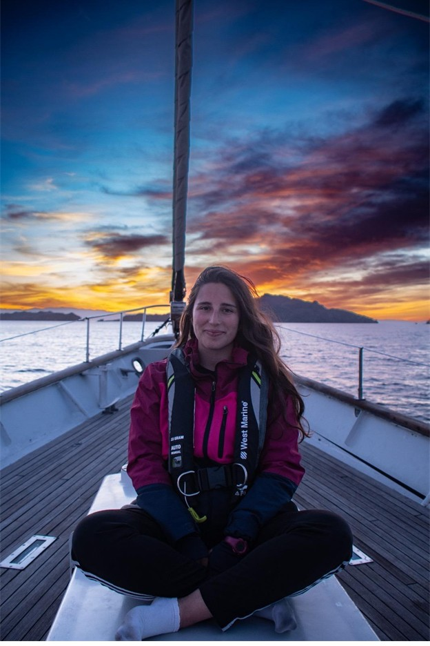
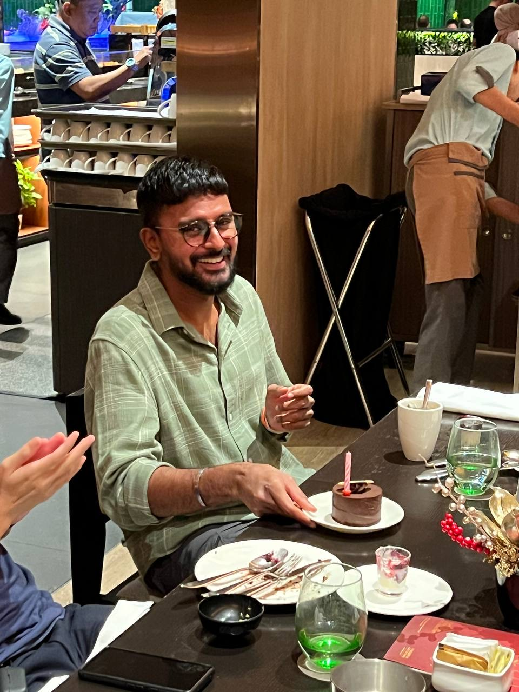
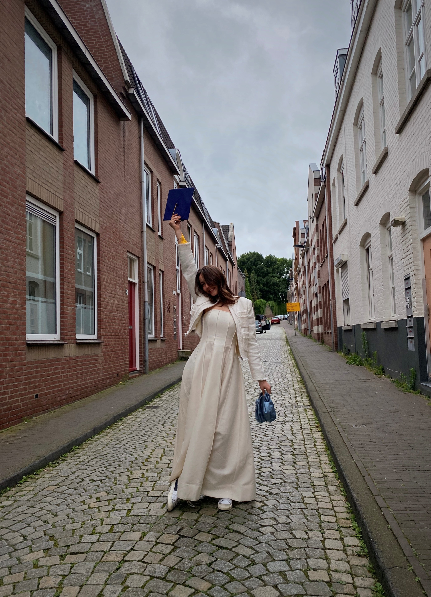
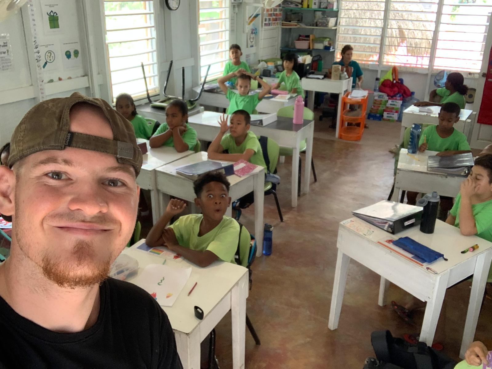

Share your story
Every MSP journey is worth telling. Whether you're doing a PhD, working in industry, or charting your own path — we'd love to feature you.
Get in touchMaastricht Science Programme
Explore the journeys of our alumni after MSP — where they went, what they discovered, and how it all began.
Four MSP graduates share how the programme shaped their journey and where life has taken them since.

"Ever since I was five years old, I knew I wanted to become a marine biologist and study whales. MSP gave me the freedom to shape my academic path around my passions."
Read Francesca's story
"The mysteries of the universe have always fascinated me. MSP nurtured curiosity, encouraged independent thinking, and reignited my genuine enjoyment of learning."
Read Vitesh's story
"I wanted to become a bridge between scientific research and real-world business applications. Every path is unique — if you are truly committed, it will find its way to you."
Read Daria's story
"I wanted to do something that would help create change now. This led me to the field of wildlife crime, leveraging technology and military experience to combat illegal trade."
Read Yannick's story